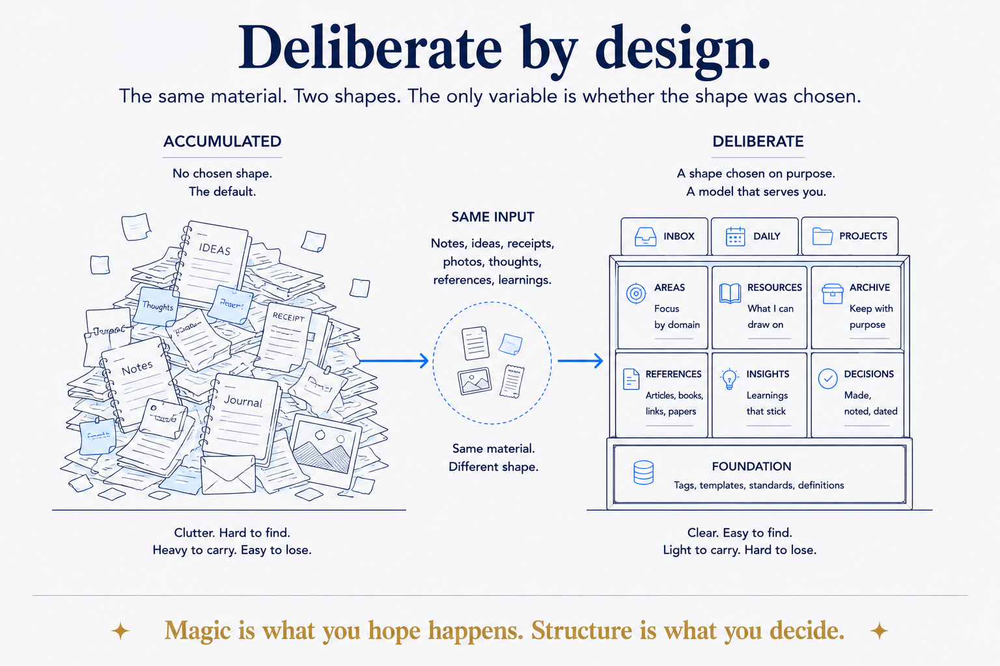

Structure isn't what happens to your data — it's what you choose. The opposite of accidental.

The word underneath the whole thesis: deliberate. A deliberate structure, a deliberate shape, a deliberate boundary, deliberately separate zones, sources deliberately judged worth trusting. Every one marks the same distinction — between structure that merely accumulated (a heap, a default, an accident) and structure you chose on purpose.
Magic is what you hope happens; structure is what you decide. 'Deliberate' is the hinge between the two, and it's why the same pile of notes becomes an asset for one person and clutter for another. Same data, opposite outcome — the difference is whether the shape was chosen.
Signature phrase: "deliberate structure" — the two core drivers (structure · deliberate) fused into one term, the two-word compression of the whole thesis. Use it as a bold named term: a data platform, a knowledge base, a team's way of working are all built on deliberate structure, not structure that happened to them.